Российский университет дружбы народов ## Цель работы
Получить навыки управления процессами операционной
системы
Изучить механизмы управления заданиями и приоритетами
Научиться работать с сигналами процессов
Теоретическая справка
Управление процессами в Linux
Основные понятия: - jobs, fg,
bg — управление заданиями - kill — отправка
сигналов процессам - nice, renice — управление
приоритетами - top, ps — мониторинг
процессов
Получение полномочий администратора
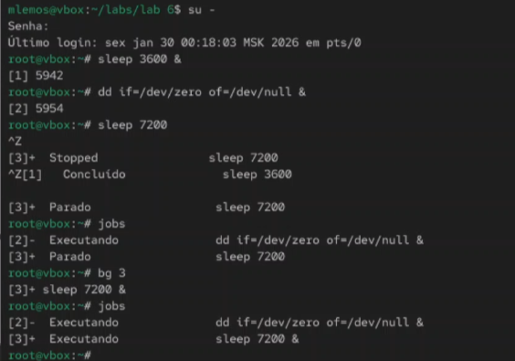
Рис. 1. Получение полномочий
администратора, ввод трёх команд, остановка процесса, установка
выполнения задания 3 в фоновом режиме, просмотр изменений в статусе
заданий
Перемещение и отмена заданий
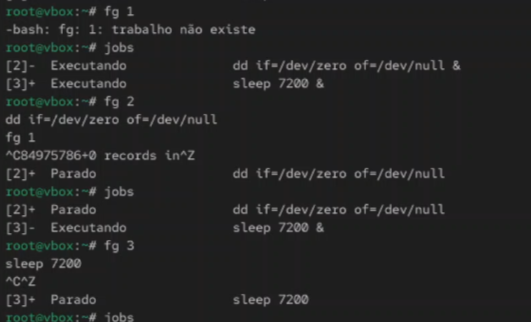
Рис. 2. Перемещение заданий на передний
план и их последующая отмена
Работа с терминалом
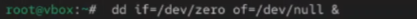
Рис. 3. Ввод команды и закрытие
терминала
Управление процессом dd
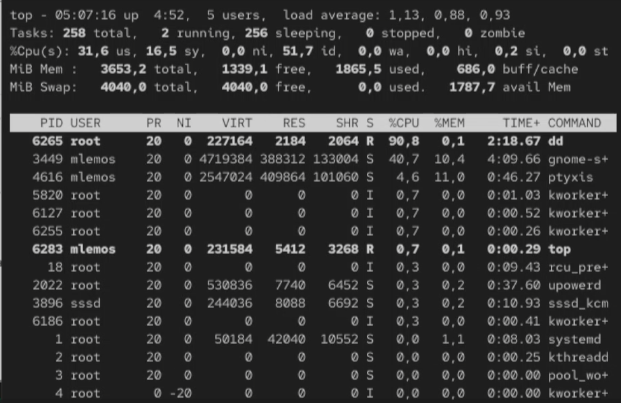
Рис. 4. Убийство задания dd в
top
Получение полномочий администратора
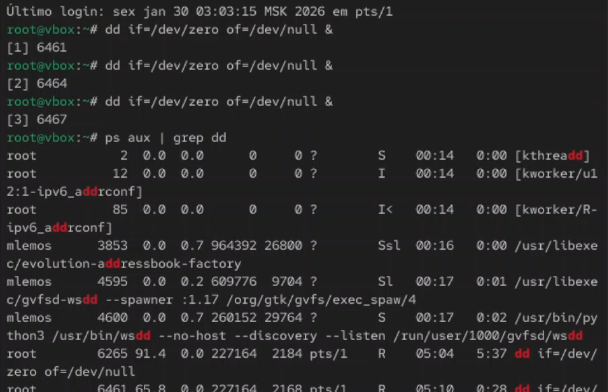
Рис. 5. Получение полномочий
администратора и ввод команд
Просмотр и изменение приоритета
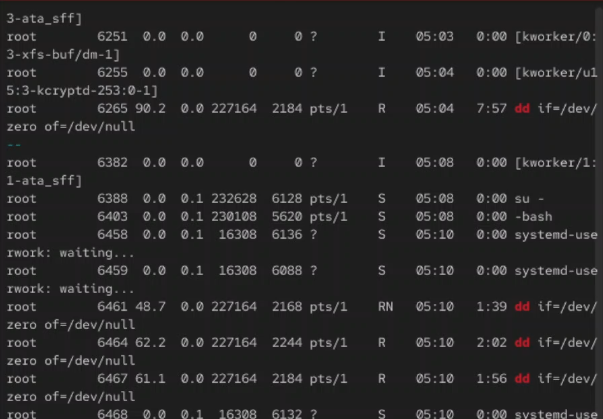
Рис. 6. Просмотр всех строк, в которых
есть dd и изменение приоритета
Иерархия процессов
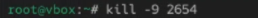
Рис. 7. Просмотр иерархии отношений между
процессами
Закрытие корневой оболочки
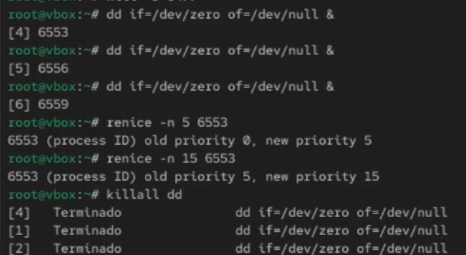
Рис. 8. Закрытие корневой
оболочки
Самостоятельная работа - задание 1
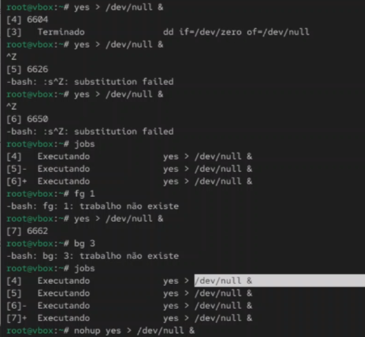
Рис. 9. Получение полномочий
администратора, запуск команды трижды как фоновое задание, увеличение
приоритета первой команды, завершение всех процессов
Запуск программы yes
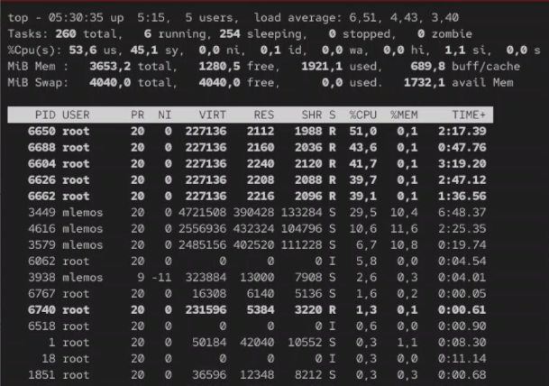
Рис. 10. Получение полномочий
администратора. Запуск программы yes в фоновом режиме с подавлением
потока вывода. Запуск программы yes на переднем плане без подавления
потока вывода. Перевод процесса на передний план и его
остановка
Управление фоновыми процессами
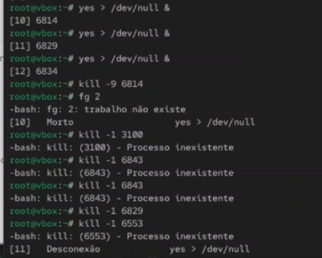
Рис. 11. Перевод процесса в фоновый
режим. Проверка состояния заданий. Запуск процесса в фоновом режиме с
условиями
Информация о процессах
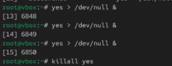
Рис. 12. Получение информации о
запущенных в операционной системе процессах
Отправка сигналов процессам
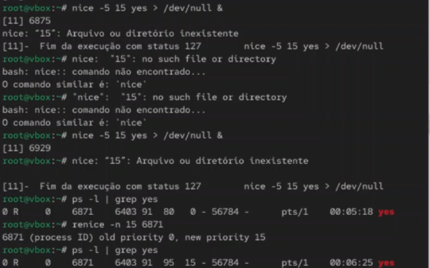
Рис. 13. Запуск трёх программ yes в
фоновом режиме с подавлением потока вывода, убийство двух процессов,
попытка послать сигнал 1 (SIGHUP)
Одновременное завершение процессов
Рис. 14. Запуск программ yes в фоновом
режиме с подавлением потока вывода и одновременное завершение их
работы
Изменение приоритетов после запуска
Рис. 15. Запуск программы yes в фоновом
режиме с подавлением потока вывода. Запуск программы yes с теми же
параметрами и с приоритетом, большим на 5. Сравнение абсолютных и
относительных приоритетов, изменение приоритета
Мониторинг процессов с top
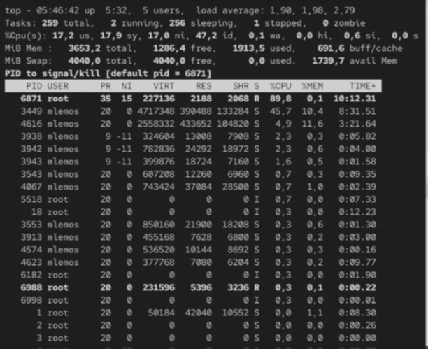
Рис. 16. Мониторинг процессов с помощью
команды top
Просмотр процессов с ps
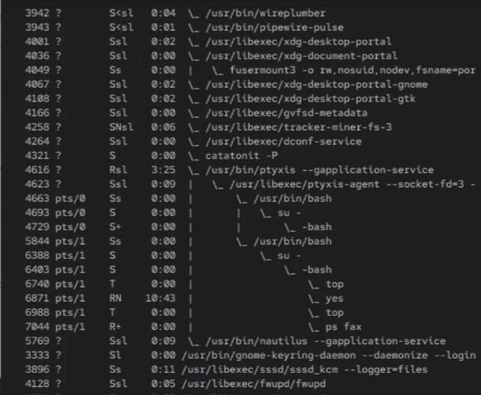
Рис. 17. Просмотр всех процессов с
помощью команды ps aux
Отправка сигнала SIGTERM
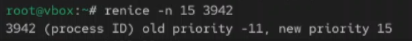
Рис. 18. Отправка сигнала SIGTERM для
завершения процесса
Отправка сигнала SIGKILL
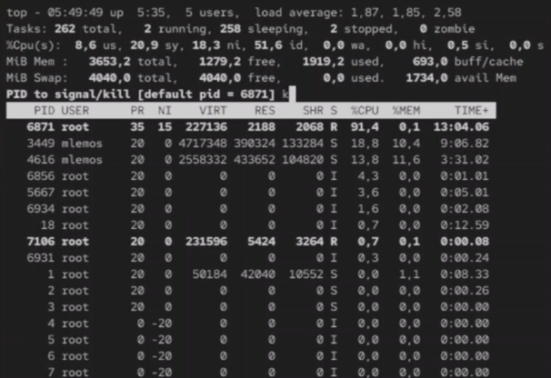
Рис. 19. Отправка сигнала SIGKILL для
принудительного завершения процесса
Итоговая проверка
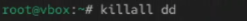
Рис. 20. Итоговая проверка управления
процессами
Вывод
В ходе выполнения лабораторной работы были получены навыки управления
процессами операционной системы. Освоены команды управления заданиями
(jobs, fg, bg), отправки сигналов
(kill), изменения приоритетов (nice,
renice) и мониторинга процессов (top,
ps).
Список литературы
[1] Linux man pages: ps(1), top(1), kill(1), nice(1), renice(1)